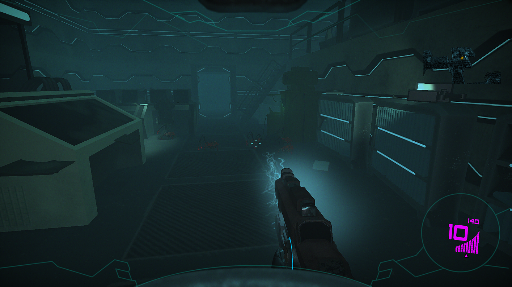
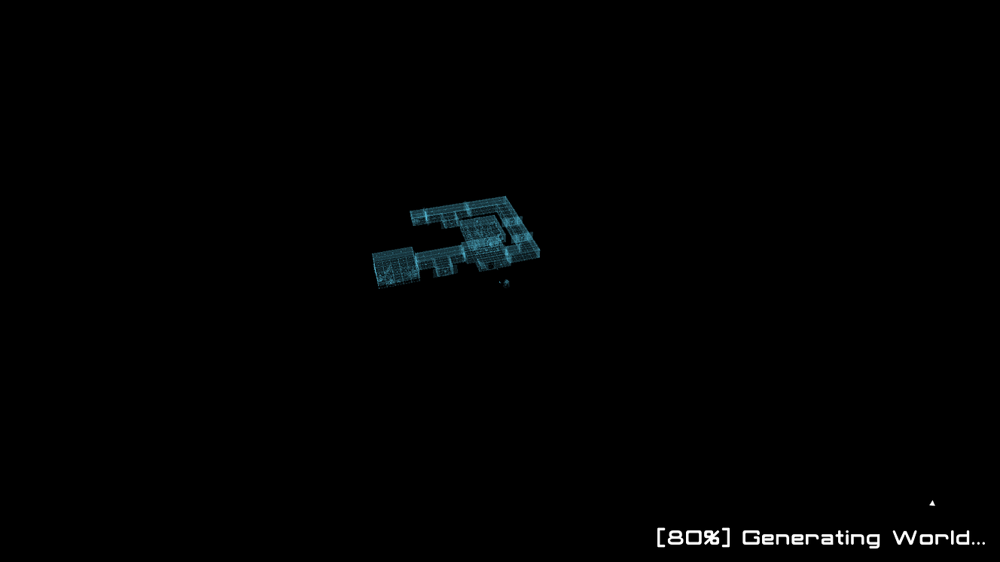

Enceladus is a rogue-like first-person shooter where you have to traverse procedurally generated levels swarming with hostile crab-like aliens.
A geyser has erupted and compromised the lunar base. You play as one of the crew members aboard Etna S; a base conducting research on the moon Enceladus and its inhabitants. Now you must escape the wreckage, fighting off any creatures getting in your way with whatever weapon your luck can offer you.
Enceladus won Swedish Game Awards for Best Technical Execution 2019.
You can download the game from Itch.io.
Enceladus is the biggest project I've ever worked on. We we're 15 people working on the game, all from different diciplines, over a period of about 4 months.
In total, we were three programmers on the project. Collectivly we decided to start off by doing pair programming (or Tri Programming I guess) so that everyone would have an idea of how the game worked at its core. This turned out to be a great strategy as we all could discuss what our plans were, code standards and design patterns while programming the base of the game. It also made it easier to define the coming tasks, their estimated time and for each programmer to claim them respectivly.

The level generation was my main responsibility during the project. The idea was that the designers would put together pre-made rooms that would later be connected via their door slots to other door slots.
There were two main issues with this approach. Firstly, since the level was not on a grid, we had to solve the issue that a door slot is turned towards another room. We can obviouslty not put a room there. Our first idea was to generate ladders or stairs at these places so that the level would continue above or below the room that was in the way. This turned out to not work very well as the space that was between the door slot and the obstructing room was always different. Instead we solved it by simply putting a locked door (and made it clearly red to make that visable) in that spot and it seemed that the testers never reacted badly to it.
The second main issue was making the level connect to itself, in order to create loops in the level. If the level had been generated on a grid, this would have been rather a simple issue to solve. However, since the rooms never really lined up with eachother, it was very difficult to connect them. In retrospect, I would probably have opted to generate it on a grid to begin with, or, if I wanted to keep the it to the organic way of slapping together door slots, I would probably have looked into procedural meshes in order to connect the doors properly.
A solution to this issue was creating vents around the level that would let the player "teleport" to another 'branch' of the level. This was however not implemented in the final version of the game. In the end this was an issue that wasn't truly solved.

Lead roles are usually senior developers with a lot of experience. But for Enceladus the only reason we had lead roles was to make communication between the disciplines smoother and faster. It was not the leads role to make decisions for everyone, rather it was a role encapsulating many meetings with the leads from the other disciplines as well as planning.
It was interesting to not spend all of my time programming, but also get to use my love for communication in the work that I do. An example of a lead meeting would be that the designers would want a feature and me or the Lead 3D artist would say that it was viable or not for our discipline to do. It made our communcation a lot smoother and our time more productive, since not everyone had to be on those meetings.